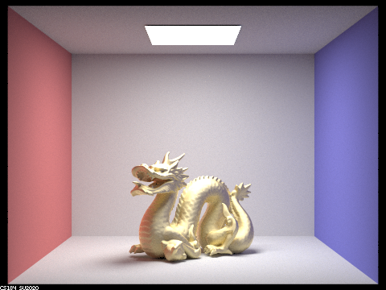
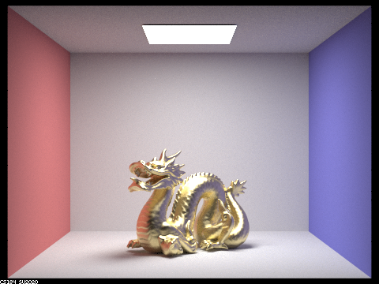
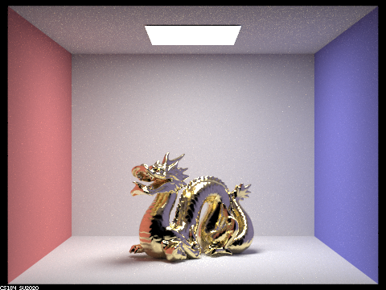
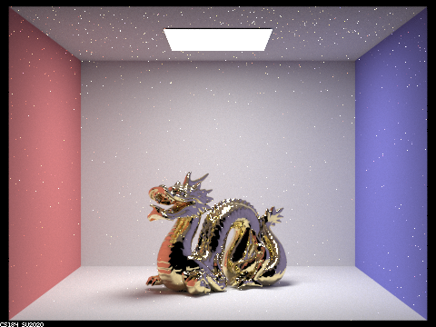
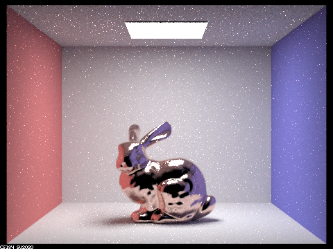

Part 1. Mirror and Glass Materials
In Part 1, we implemented mirror and glass material Bidirectional Scattering Distribution Functions (BSDF), which made it possible to render scenes containing objects with these materials. For mirror materials, the probability density function (PDF) is set to 1. In the sample_f function, we return the direction of the reflected ray by setting its x to -x, its y to -y and keeping the same z because the ray is in the local object coordinate system, where the intersection point is the origin (0, 0, 0) and the z direction is the direction of the normal.
For refracted materials, the probability density function (PDF) is also set to 1. In the sample_f function, we return the direction of the refracted ray by using Snell's Law. The ray may not refract at all due to the Total Internal Reflection.
The incoming ray may be entering from air into the material, or coming from the material and entering air. Depending on which one of the two cases the ray is, we calculate the ratio eta of the old index of refraction (ior) to the new index of refraction. The image below shows the diagram of the two cases when the ray is entering or exiting a non-air material. The air index of refraction is 1.0.
eta. Credit: Project 3-2 Part 1 Spec.Glass material is made by combining reflection and refraction code. We used Schlick's approximation to decide what the ratio of reflection to refraction should be for each ray. If the ray does get refracted, than we probabilistically either reflect it or refract it, according to the Schlick's formula, shown below.
R. Credit: Wikipedia.Below are the example images rendered after glass and mirror BSDF are implemented. The image CBdragon.dae contains mirror only, the image CBlucy.dae contains glass only, and the image CBspheres.dae contains both mirror and glass. Three images below are rendered with using 256 samples per pixel, 4 light rays per pixel, maximum ray depth of 7, and a resolution of 480 by 360 pixels.

CBdragon.dae contains mirror material only.CBlucy.dae contains glass material only.CBspheres.dae contains mirror and glass materials .Show a sequence of six images of scene `CBspheres.dae` rendered with `max_ray_depth` set to 0, 1, 2, 3, 4, 5, and 100. The other settings should be at least 64 samples per pixel and 4 samples per light. Make sure to include all screenshots.
Your response goes here.
Point out the new multibounce effects that appear in each image.
Your response goes here.
Explain how these bounce numbers relate to the particular effects that appear. Make sure to include all screenshots.
Your response goes here.
Part 2. Microfacet Material
Show a screenshot sequence of 4 images of scene `CBdragon_microfacet_au.dae` rendered with $\alpha$ set to 0.005, 0.05, 0.25 and 0.5. The other settings should be at least 128 samples per pixel and 1 samples per light. The number of bounces should be at least 5. Describe the differences between different images. Note that, to change the $\alpha$, just open the .dae file and search for `microfacet`.

CBdragon_microfacet_au.dae with $\alpha$ = 0.5. |

CBdragon_microfacet_au.dae with $\alpha$ = 0.25. |

CBdragon_microfacet_au.dae with $\alpha$ = 0.05. |

CBdragon_microfacet_au.dae with $\alpha$ = 0.005. |
WORDS
Show two images of scene `CBbunny_microfacet_cu.dae` rendered using cosine hemisphere sampling (default) and your importance sampling. The sampling rate should be fixed at 64 samples per pixel and 1 samples per light. The number of bounces should be at least 5. Briefly discuss their difference.

CBbunny_microfacet_cu.dae with Importance Sampling. |

CBbunny_microfacet_cu.dae with Uniform Sampling. |
WORDS AGAIN
Show at least one image with some other conductor material, replacing `eta` and `k`. Note that you should look up values for real data rather than modifying them arbitrarily. Tell us what kind of material your parameters correspond to.
CBbunny_microfacet_cu.dae with manganese metal refractive index.
Manganese. n is eta (weird greek letter) in the code, k is k in the code.
These values I yoinked from the refractive index website they linked in the spec. I replaced the values in the code with the ones below:
@ 614nm (red): n = 2.5066, k = 3.5306
@ 549nm (green): n = 2.39, k = 3.33
@ 466nm (blue): n = 2.17, k = 3.04
Part 3. Environment Light
Pick one *.exr* file to use for all subparts here. Include a converted *.jpg* of it in your website so we know what map you are using.In a few sentences, explain the ideas behind environment lighting (i.e. why we do it/how it works).
Your response goes here.
Show the *probability_debug.png* file for the *.exr* file you are using, generated using the `save_probability_debug()` helper function after initializing your probability distributions.
Your response goes here.
Use the `bunny_unlit.dae` scene and your environment map *.exr* file and render two pictures, one with uniform sampling and one with importance sampling. Use 4 samples per pixel and 64 samples per light in each. Compare noise levels. Make sure to include all screenshots.
Your response goes here.
Use a different image (if you did part 2, we recommend `bunny_microfacet_cu_unlit.dae`) and your environment map *.exr* file and render two pictures, one with uniform sampling and one with importance sampling. Use 4 samples per pixel and 64 samples per light in each. Compare noise levels. Make sure to include all screenshots.
Your response goes here.
Part 4. Depth of Field
For these subparts, we recommend using a microfacet BSDF scene to show off the cool out of focus effects you can get with depth of field!In a few sentences, explain the differences between a pinhole camera model and a thin-lens camera model.
Your response goes here.
Show a "focus stack" where you focus at 4 visibly different depths through a scene. Make sure to include all screenshots.
Your response goes here.
Show a sequence of 4 pictures with visibly different aperture sizes, all focused at the same point in a scene. Make sure to include all screenshots.
Your response goes here.